3. Les bases du développement web en Java
Nous abordons maintenant le développement d'applications web dynamiques, c.a.d. des applications dans lesquelles les pages HTML envoyées à l'utilisateur sont générées par des programmes.
3.1. Création d'un projet web sous Eclipse
Nous allons développer une première application web avec Eclipse/Tomcat. Nous reprenons une démarche analogue à celle utilisée pour créer une application web sans Eclipse. Eclipse lancé, nous créons un nouveau projet :

que nous définissons comme un projet web dynamique :

Dans la première page de l'assistant de création, nous précisons le nom du projet [1] et son emplacement [2] :
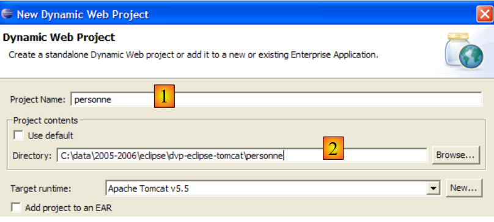
Dans la seconde page de l'assistant nous acceptons les valeurs par défaut :
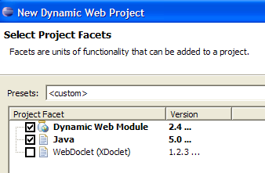
La dernière page de l'assistant nous demande de définir le contexte [3] de l'application :
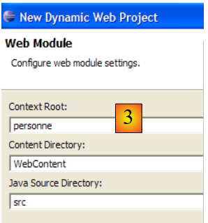
Une fois l'assistant validé par [Finish], Eclipse se connecte au site [http://java.sun.com] pour récupérer certains documents qu'il veut mettre en cache afin d'éviter des accès réseau inutiles. Une demande d'agrément de licence est alors demandée :

On l'accepte. Eclipse crée le projet web. Pour l'afficher, il utilise un environnement, appelé perspective, différent de celui utilisé pour un projet Java classique :

La perspective associée à un projet web est la perspective J2EE. Nous l'acceptons pour voir... Le résultat obtenu est le suivant :

La perspective J2EE est en fait inutilement complexe pour les projets web simples. Dans ce cas, la perspective Java est suffisante. Pour l'obtenir, nous utilisons l'option [Window -> Open perspective -> Java] :

src : contiendra le code Java des classes de l'application ainsi que les fichiers qui doivent être dans le Classpath de l'application.
build/classes (non représenté) : contiendra les .class des classes compilées ainsi qu'une copie de tous les fichiers autres que .java placés dans src. Une application web utilise fréquemment des fichiers dits fichiers "ressource" qui doivent être dans le Classpath de l'application, c.a.d. l'ensemble des dossiers qui sont explorés par la JVM lorsque l'application fait référence à une classe, soit pendant la compilation soit à l'exécution. Eclipse fait en sorte que le dossier build/classes fasse partie du c web. On place dans le dossier src les fichiers "ressource" sachant qu'Eclipse les recopiera automatiquement dans build/classes.
WebContent : contiendra les ressources de l'application web qui n'ont pas à être dans le dans le Classpath de l'application.
WEB-INF/lib : contiendra les archives .jar dont a besoin l'application web.
Examinons le contenu du fichier [WEB-INF/web.xml] qui configure l'application [personne] :
<?xml version="1.0" encoding="UTF-8"?>
<web-app id="WebApp_ID" version="2.4" xmlns="http://java.sun.com/xml/ns/j2ee" xmlns:xsi="http://www.w3.org/2001/XMLSchema-instance" xsi:schemaLocation="http://java.sun.com/xml/ns/j2ee http://java.sun.com/xml/ns/j2ee/web-app_2_4.xsd">
<display-name> personne</display-name>
<welcome-file-list>
<welcome-file>index.html</welcome-file>
<welcome-file>index.htm</welcome-file>
<welcome-file>index.jsp</welcome-file>
<welcome-file>default.html</welcome-file>
<welcome-file>default.htm</welcome-file>
<welcome-file>default.jsp</welcome-file>
</welcome-file-list>
</web-app>
Nous avons déjà rencontré de type de configuration lorsque nous avons étudié la création de pages d'accueil au paragraphe 2.3.4. Ce fichier ne fait rien d'autre que de définir une série de pages d'accueil. Nous ne gardons que la première. Le fichier [web.xml] devient le suivant :
<?xml version="1.0" encoding="UTF-8"?>
<web-app id="WebApp_ID" version="2.4"
xmlns="http://java.sun.com/xml/ns/j2ee"
xmlns:xsi="http://www.w3.org/2001/XMLSchema-instance"
xsi:schemaLocation="http://java.sun.com/xml/ns/j2ee http://java.sun.com/xml/ns/j2ee/web-app_2_4.xsd">
<display-name>personne</display-name>
<welcome-file-list>
<welcome-file>index.html</welcome-file>
</welcome-file-list>
</web-app>
Le contenu du fichier XML ci-dessus doit obéir aux règles de syntaxe définies dans le fichier désigné par l'attribut [xsi:schemaLocation] de la balise d'ouverture <web-app>. Ce fichier est ici [http://java.sun.com/xml/ns/j2ee/web-app_2_4.xsd]. C'est un fichier XML qu'on peut demander directement avec un navigateur. Si celui-ci est suffisamment récent, il saura afficher un fichier XML :

Eclipse va chercher à vérifier la validité du document XML à l'aide du fichier .xsd précisé dans l'attribut [xsi:schemaLocation] de la balise d'ouverture <web-app>. Il va pour cela faire un accès réseau. Si votre ordinateur est sur un réseau privé, il faut alors indiquer à Eclipse la machine à utiliser pour sortir du réseau privé, appelée proxy HTTP. Cela se fait avec l'option [Window -> Preferences -> Internet] :
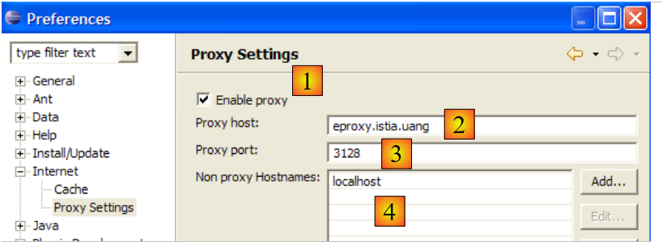
On coche (1) si on est sur un réseau privé. Dans (2), on indique le nom de la machine qui supporte le proxy HTTP et dans (3) le port d'écoute de celui-ci. Enfin dans (4), on indique les machines pour lesquelles il ne faut pas passer par le proxy, des machines qui sont sur le même réseau privé que la machine avec laquelle on travaille.
Nous allons créer maintenant le fichier [index.html] de la page d'accueil.
3.2. Création d'une page d'accueil
Nous cliquons droit sur le dossier [WebContent] puis prenons l'option [New -> Other] :

Nous choisissons le type [HTML] et faisons [Next] ->

Ci-dessus, nous sélectionnons le dossier parent [WebContent] en (1) ou en (2) puis nous précisons en (3) le nom du fichier à créer. Ceci fait, nous passons à la page suivante de l'assistant :

Avec (1), nous pouvons générer un fichier HTML pré-rempli par (2). Si on décoche (1), on génère un fichier HTML vide. Nous gardons la coche (1) afin de bénéficier d'un squelette de code. Nous terminons l'assistant par [Finish]. Le fichier [index.html] est alors créé :

avec le contenu suivant :
<!DOCTYPE HTML PUBLIC "-//W3C//DTD HTML 4.01 Transitional//EN">
<html>
<head>
<meta http-equiv="Content-Type" content="text/html; charset=ISO-8859-1">
<title>Insert title here</title>
</head>
<body>
</body>
</html>
Nous modifions ce fichier de la façon suivante :
<!DOCTYPE HTML PUBLIC "-//W3C//DTD HTML 4.01 Transitional//EN">
<html>
<head>
<meta http-equiv="Content-Type" content="text/html; charset=ISO-8859-1">
<title>Application personne</title>
</head>
<body>
Application personne active...
<br>
<br>
Vous êtes sur la page d'accueil
</body>
</html>
3.3. Test de la page d'accueil
Si elle n'est pas présente, faisons apparaître la vue [Servers] avec l'option [Window - > Show View -> Other -> Servers] puis cliquons droit sur le serveur Tomcat 5.5 :

L'option [Add and Remove Objects] ci-dessus permet d'ajouter / retirer des applications web au serveur Tomcat :

Les projets web connus d'Eclipse sont présentés en (1). On peut les enregistrer sur le serveur Tomcat par (2). Les applications web enregistrées auprès du serveur Tomcat apparaissent en (4). On peut les désenregistrer avec (3). Enregistrons le projet [personne] :

puis terminons l'assistant d'enregistrement par [Finish]. La vue [Servers] montre que le projet [personne] a été enregistré sur Tomcat :

Maintenant, lançons le serveur Tomcat :
 |  |
Lançons le navigateur web :

puis demandons l'url [http://localhost:8080/personne]. Cette url est celle de la racine de l'application web. Aucun document n'est demandé. Dans ce cas, c'est la page d'accueil de l'application qui est affichée. Si elle n'existe pas, une erreur est signalée. Ici la page d'accueil existe. C'est le fichier [index.html] que nous avons créé précédemment. Le résultat obtenu est le suivant :
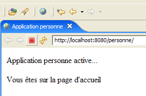
Il est conforme à ce qui était attendu. Maintenant, prenons un navigateur externe à Eclipse et demandons la même url :

L'application web [personne] est donc connue également à l'extérieur d'Eclipse.
3.4. Création d'un formulaire HTML
Nous créons maintenant un document HTML statique [formulaire.html] dans le dossier [personne] :
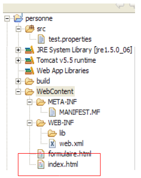
Pour le créer, on suivra la procédure décrite au paragraphe 3.2, page 33. Son contenu sera le suivant :
<!DOCTYPE HTML PUBLIC "-//W3C//DTD HTML 4.01 Transitional//EN">
<html>
<head>
<title>Personne - formulaire</title>
</head>
<body>
<center>
<h2>Personne - formulaire</h2>
<hr>
<form action="" method="post">
<table>
<tr>
<td>Nom</td>
<td><input name="txtNom" value="" type="text" size="20"></td>
</tr>
<tr>
<td>Age</td>
<td><input name="txtAge" value="" type="text" size="3"></td>
</tr>
</table>
<table>
<tr>
<td><input type="submit" value="Envoyer"></td>
<td><input type="reset" value="Retablir"></td>
<td><input type="button" value="Effacer"></td>
</tr>
</table>
</form>
</center>
</body>
</html>
Le code HTML ci-dessus correspond au formulaire ci-dessous :

type HTML | nom | code HTML | rôle | |
<input type= "text "> | txtNom | ligne 14 | saisie du nom | |
<input type= "text "> | txtAge | ligne 18 | saisie de l'âge | |
<input type= "submit "> | ligne 23 | envoi des valeurs saisies au serveur à l'url /personne1/main | ||
<input type= "reset "> | ligne 24 | pour remettre la page dans l'état où elle a été reçue initialement par le navigateur | ||
<input type= "button "> | ligne 25 | pour effacer les contenu des champs de saisie [1] et [2] |
Sauvegardons le document dans le dossier <personne>/WebContent. Lançons Tomcat si besoin est. Avec un navigateur demandons l'URL http://localhost:8080/personne/formulaire.html :

L'architecture client / serveur de cette application basique est la suivante :

Le serveur web est entre l'utilisateur et l'application web et n'a pas été représenté ici. [formulaire.html] est un document statique qui délivre à chaque requête du client le même contenu. La programmation web vise à générer du contenu adapté à la requête du client. Ce contenu est alors généré par programme. Une première solution est d'utiliser une page JSP (Java Server Page) à la place du fichier HTML statique. C'est ce que nous voyons maintenant.
3.5. Création d'une page JSP
Lectures [ref1] : chapitre 1, chapitre 2 : 2.2, 2.2.1, 2.2.2, 2.2.3, 2.2.4
L'architecture client / serveur précédente est transformée comme suit :

Une page JSP est une forme de page HTML paramétrée. Certains éléments de la page ne reçoivent leur valeur qu'au moment de l'exécution. Ces valeurs sont calculées par programme. On a donc une page dynamique : des requêtes successives sur la page peuvent amener des réponses différentes. Nous appelons ici réponse, la page HTML affichée par le navigateur client. Au final, c'est toujours un document HTML que reçoit le navigateur. Ce document HTML est généré par le serveur web à partir de la page JSP. Celle-ci sert de modèle. Ses éléments dynamiques sont remplacés par leurs valeurs effectives au moment de la génération du document HTML.
Pour créer une page JSP, nous cliquons droit sur le dossier [WebContent] puis prenons l'option [New -> Other] :

Nous choisissons le type [JSP] et faisons [Next] ->

Ci-dessus, nous sélectionnons le dossier parent [WebContent] en (1) ou en (2) puis nous précisons en (3) le nom du fichier à créer. Ceci fait, nous passons à la page suivante de l'assistant :
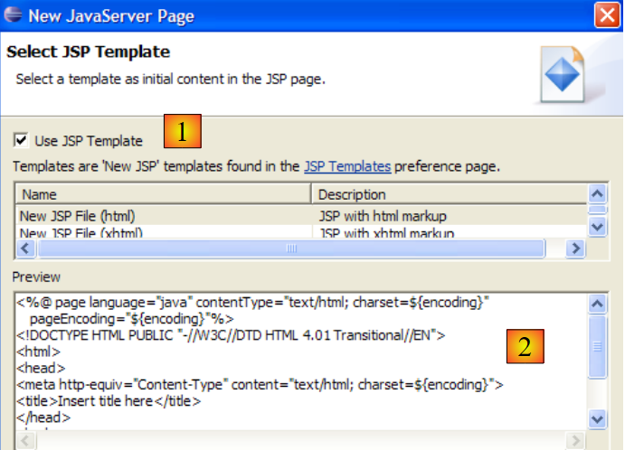
Avec (1), nous pouvons générer un fichier JSP pré-rempli par (2). Si on décoche (1), on génère un fichier JSP vide. Nous gardons la coche (1) afin de bénéficier d'un squelette de code. Nous terminons l'assistant par [Finish]. Le fichier [formulaire.jsp] est alors créé :

avec le contenu suivant :
<%@ page language="java" contentType="text/html; charset=ISO-8859-1" pageEncoding="ISO-8859-1"%>
<!DOCTYPE HTML PUBLIC "-//W3C//DTD HTML 4.01 Transitional//EN">
<html>
<head>
<meta http-equiv="Content-Type" content="text/html; charset=ISO-8859-1">
<title>Insert title here</title>
</head>
<body>
</body>
</html>
La ligne 1 indique que nous avons affaire à une page JSP. Nous transformons le texte ci-dessus de la façon suivante :
<%@ page language="java" contentType="text/html; charset=ISO-8859-1"
pageEncoding="ISO-8859-1"%>
<!DOCTYPE HTML PUBLIC "-//W3C//DTD HTML 4.01 Transitional//EN">
<%
// on récupère les paramètres
String nom=request.getParameter("txtNom");
if(nom==null) nom="inconnu";
String age=request.getParameter("txtAge");
if(age==null) age="xxx";
%>
<html>
<head>
<meta http-equiv="Content-Type" content="text/html; charset=ISO-8859-1">
<title>Personne - formulaire</title>
</head>
<body>
<center>
<h2>Personne - formulaire</h2>
<hr>
<form action="" method="post">
<table>
<tr>
<td>Nom</td>
<td><input name="txtNom" value="<%= nom %>" type="text" size="20"></td>
</tr>
<tr>
<td>Age</td>
<td><input name="txtAge" value="<%= age %>" type="text" size="3"></td>
</tr>
</table>
<table>
<tr>
<td><input type="submit" value="Envoyer"></td>
<td><input type="reset" value="Rétablir"></td>
<td><input type="button" value="Effacer"></td>
</tr>
</table>
</form>
</center>
</body>
</html>
Le document initialement statique est maintenant devenu dynamique par introduction de code Java. Pour ce type de document, nous procèderons toujours comme suit :
- nous mettons du code Java dès le début du document pour récupérer les paramètres nécessaires au document pour s'afficher. Ceux-ci seront souvent dans l'objet request. Cet objet représente la requête du client. Celle-ci peut passer au travers de plusieurs servlets et pages JSP qui ont pu l'enrichir. Ici, elle nous arrivera directement du navigateur.
- le code HTML se trouve à la suite. Il se contentera le plus souvent d'afficher des variables calculées auparavant dans le code Java au moyen de balises <%= variable %>. On notera ici que le signe = est collé au signe %. C'est une cause fréquente d'erreurs.
Que fait le document dynamique précédent ?
- lignes 6-9 : il récupère dans la requête, deux paramètres appelés [txtNom] et [txtAge] et met leurs valeurs dans les variables [nom] (ligne 6) et [age] (ligne 8). S'il ne trouve pas les paramètres, il donne aux variables associées des valeurs par défaut.
- il affiche la valeur des deux variables [nom, age] dans le code HTML qui suit (lignes 25 et 29).
Faisons un premier test. Lançons Tomcat si besoin est, puis avec un navigateur, demandons l'URL http://localhost:8080/personne/formulaire.jsp :
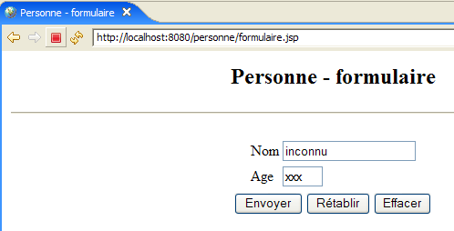
Le document formulaire.jsp a été appelé sans passage de paramètres. Les valeurs par défaut ont donc été affichées. Maintenant demandons l'URL http://localhost:8080/personne/formulaire.jsp?txtNom=martin&txtAge=14 :

Cette fois-ci, nous avons passé au document formulaire.jsp, les paramètres txtNom et txtAge qu'il attend. Il les a donc affichés. On sait qu'il y a deux méthodes pour passer des paramètres à un document web : GET et POST. Dans les deux cas, les paramètres passés se retrouvent dans l'objet prédéfini request. Ici, ils ont été passés par la méthode GET.
3.6. Création d'une servlet
Lectures [ref1] : chapitre 1, chapitre 2 : 2.1, 2.1.1, 2.1.2, 2.3.1
Dans la version précédente, la requête du client était traitée par une page JSP. Lors du premier appel à celle-ci, le serveur web, ici Tomcat, crée une classe Java à partir de cette page et compile celle-ci. C'est le résultat de cette compilation qui au final traite la requête du client. La classe générée à partir de la page JSP est une servlet parce qu'elle implémente l'interface [javax.Servlet] :

La requête du client peut être traitée par toute classe implémentant cette interface. Nous construisons maintenant une telle classe : ServletFormulaire. L'architecture client / serveur précédente est transformée comme suit :

Avec l'architecture à base de page JSP, le document HTML envoyé au client était généré par le serveur web à partir de la page JSP qui servait de modèle. Ici le document HTML envoyé au client sera entièrement généré par la servlet.
3.6.1. Création de la servlet
Sous Eclipse, cliquons droit sur le dossier [src] et prenons l'option de création d'une classe :

puis définissons les caractéristiques de la classe à créer :

Dans (1), on met un nom de paquetage, dans (2) le nom de la classe à créer. Celle-ci doit dériver de la classe indiquée en (3). Il est inutile de taper soi-même le nom complet de celle-ci. Le bouton (4) permet l'accès aux classes actuellement dans le Classpath de l'application web :

En (1) on tape le nom de la classe recherchée. On obtient en (2) les classes du Classpath dont le nom contient la chaîne tapée en (1).
Après validation de l'assistant de création, le projet web [personne] est modifié de la façon suivante :

La classe [ServletFormulaire] a été créée avec un squelette de code :

La copie d'écran ci-dessus montre qu'Eclipse signale un [warning] sur la ligne déclarant la classe. Cliquons sur l'icône (lampe) signalant ce [warning] :

Après avoir cliqué sur (1), des solutions pour supprimer le [warning] nous sont proposées dans (2). La sélection de l'une d'elles provoque l'apparition dans (3) de la modification de code que son choix va amener.
Java 1.5 a amené des modifications au langage Java et ce qui était correct dans une version antérieure peut désormais faire l'objet de [warnings]. Ceux-ci ne signalent pas des erreurs qui pourraient empêcher la compilation de la classe. Ils sont là pour attirer l'attention du développeur sur des points de code qui pourraient être améliorés. Le [warning] présent indique qu'une classe devrait avoir un numéro de version. Celui-ci est utilisé pour la sérialisation / désérialisation des objets, c.a.d. lorsqu'un objet Java .class en mémoire doit être transformé en une suite de bits envoyés séquentiellement dans un flux d'écriture ou l'inverse lorsqu'un objet Java .class en mémoire doit être créé à partir d'une suite de bits lus séquentiellement dans un flux de lecture. Tout cela est fort éloigné de nos préoccupations actuelles. Aussi allons-nous demander au compilateur d'ignorer ce warning en choisissant la solution [Add @SuppressWarnings ...]. Le code devient alors le suivant :

Il n'y a plus de [warning]. La ligne ajoutée s'appelle une " annotation ", une notion apparue avec Java 1.5. Nous complèterons ce code ultérieurement.
3.6.2. Classpath d'un projet Eclipse
Le Classpath d'une application Java est l'ensemble des dossiers et archives.jar explorées lorsque le compilateur la compile ou lorsque la JVM l'exécute. Ces deux Classpath ne sont pas forcément identiques, certaines classes n'étant utiles qu'à l'exécution et pas à la compilation. Le compilateur Java aussi bien que la JVM ont un argument qui permet de préciser le Classpath de l'application à compiler ou exécuter. De façon plus ou moins transparente pour l'utilisateur, Eclipse assure la construction et le passage de cet argument à la JVM.
Comment peut-on connaître les éléments du Classpath d'un projet Eclipse ? Avec l'option [<projet> / Build Path / Configure Build Path] :

Nous obtenons alors l'assistant de configuration suivant :
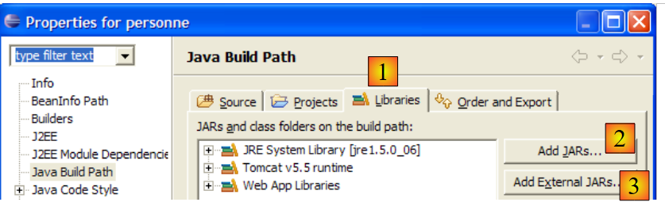
L'onglet (1) [Libraries] permet de définir la liste des archives .jar qui font partie du Classpath de l'application. Elles sont donc explorées par la JVM lorsque l'application demande une classe. Les boutons [2] et [3] permettent d'ajouter des archives au Classpath. Le bouton [2] permet de désigner des archives présentes dans les dossiers des projets gérés par Eclipse alors que le bouton [3] permet de désigner toute archive du système de fichiers de l'ordinateur.
Ci-dessus on voit apparaître trois bibliothèques (Libraries) :
- [JRE System Library] : librairie de base pour les projets Java d'Eclipse :

- [Tomcat v5.5 runtime] : librairie apportée par le serveur Tomcat. Elle comporte les classes nécessaires au développement web. Cette librairie est incluse dans tout projet web d'Eclipse ayant été associé au serveur Tomcat.

C'est l'archive [servlet-api.jar] qui contient la classe [javax.servlet.http.HttpServlet], classe parent de la classe [ServletFormulaire] que nous sommes en train de créer. C'est parce que cette archive est dans le Classpath de l'application qu'elle a pu être proposée comme classe parent dans l'assistant rappelé ci-dessous.

Si ce n'avait pas été le cas, elle ne serait pas apparue dans les propositions de [2]. Si donc dans cet assistant, on veut référencer une classe parent et que celle-ci n'est pas proposée, c'est que, soit on se trompe dans le nom de cette classe, soit l'archive qui la contient n'est pas dans le Classpath de l'application.
- [Web App Libraries] rassemble les archives présentes dans le dossier [WEB-INF/lib] du projet. Ici il est vide :

Les archives du Classpath du projet Eclipse sont présentes dans l'explorateur de projets. Par exemple, pour le projet web [personne] :

L'explorateur de projets nous donne accès au contenu de ces archives :

Ainsi ci-dessus, on peut voir que c'est l'archive [servlet-api.jar] qui contient la classe [javax.servlet.http.HttpServlet].
3.6.3. Configuration de la servlet
Lectures [ref1] : chapitre 2 : 2.3, 2.3.1, 2.3.2, 2.3.3, 2.3.4
Le fichier [WEB-INF/web.xml] sert à configurer l'application web :

Ce fichier, pour le projet [personne] est actuellement le suivant (cf page 32) :
<?xml version="1.0" encoding="UTF-8"?>
<web-app id="WebApp_ID" version="2.4"
xmlns="http://java.sun.com/xml/ns/j2ee"
xmlns:xsi="http://www.w3.org/2001/XMLSchema-instance"
xsi:schemaLocation="http://java.sun.com/xml/ns/j2ee http://java.sun.com/xml/ns/j2ee/web-app_2_4.xsd">
<display-name>personne</display-name>
<welcome-file-list>
<welcome-file>index.html</welcome-file>
</welcome-file-list>
</web-app>
Il indique seulement l'existence d'un fichier d'accueil (ligne 8). Nous le faisons évoluer pour déclarer :
- l'existence de la servlet [ServletFormulaire]
- les URL traitées par cette servlet
- des paramètres d'initialisation de la servlet
Le fichier web.xml de notre application personne sera le suivant :
<?xml version="1.0" encoding="UTF-8"?>
<web-app id="WebApp_ID" version="2.4"
xmlns="http://java.sun.com/xml/ns/j2ee"
xmlns:xsi="http://www.w3.org/2001/XMLSchema-instance"
xsi:schemaLocation="http://java.sun.com/xml/ns/j2ee http://java.sun.com/xml/ns/j2ee/web-app_2_4.xsd">
<display-name>personne</display-name>
<servlet>
<servlet-name>formulairepersonne</servlet-name>
<servlet-class>
istia.st.servlets.personne.ServletFormulaire
</servlet-class>
<init-param>
<param-name>defaultNom</param-name>
<param-value>inconnu</param-value>
</init-param>
<init-param>
<param-name>defaultAge</param-name>
<param-value>XXX</param-value>
</init-param>
</servlet>
<servlet-mapping>
<servlet-name>formulairepersonne</servlet-name>
<url-pattern>/formulaire</url-pattern>
</servlet-mapping>
<welcome-file-list>
<welcome-file>index.html</welcome-file>
</welcome-file-list>
</web-app>
Les points principaux de ce fichier de configuration sont les suivants :
- les lignes 7-24 sont liées à la présence de la servlet [ServletFormulaire]
- lignes 7-20 : la configuration d'une servlet se fait entre les balises <servlet> et </servlet>. Une application peut comporter plusieurs servlets et donc autant de sections de configuration <servlet>...</servlet>.
- ligne 8 : la balise <servlet-name> fixe un nom à la servlet - peut être quelconque
- lignes 9-11 : la balise <servlet-class> donne le nom complet de la classe correspondant à la servlet. Tomcat ira chercher cette classe dans le Classpath du projet web [personne]. Il la trouvera dans [build/classes] :
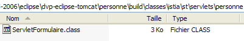
- lignes 12-15 : la balise <init-param> sert à passer des paramètres de configuration à la servlet. Ceux-ci sont généralement lus dans la méthode init de la servlet car les paramètres de configuration de celle-ci doivent être connus dès son premier chargement.
- lignes 13-14 : la balise <param-name> fixe le nom du paramètre et <param-value> sa valeur.
- les lignes 12-15 définissent un paramètre [defaultNom,"inconnu"] et les lignes 16-19 un paramètre [defaultAge,"XXX"]
- lignes 21-24 : la balise <servlet-mapping> sert à associer une servlet (servlet-name) à un modèle d'URL (url-pattern). Ici le modèle est simple. Il dit qu'à chaque fois qu'une URL aura la forme /formulaire, il faudra utiliser la servlet formulairepersonne, c.a.d. la classe [istia.st.servlets.ServletFormulaire] (lignes 8-11). Il n'y a donc qu'une url acceptée par la servlet [formulairepersonne].
3.6.4. Le code de la servlet [ServletFormulaire]
La servlet [ServletFormulaire] aura le code suivant :
A la simple lecture de la servlet, on peut constater qu'elle est beaucoup plus complexe que la page JSP correspondante. C'est une généralité : une servlet n'est pas adaptée pour générer du code HTML. Ce sont les pages JSP qui sont faites pour cela. Nous aurons l'occasion d'y revenir. Explicitons quelques points importants de la servlet ci-dessus :
- lorsqu'une servlet est appelée pour la 1ère fois, sa méthode init (ligne 20) est appelée. C'est le seul cas où elle est appelée.
- si la servlet a été appelée par la méthode HTTP GET, la méthode doGet (ligne 32) est appelée pour traiter la requête du client.
- si la servlet a été appelée par la méthode HTTP POST, la méthode doPost (ligne 82) est appelée pour traiter la requête du client.
La méthode init sert ici à récupérer dans [web.xml] les valeurs des paramètres d'initialisation appelés " defaultNom " et " defaultAge ". La méthode init exécutée au chargement initial de la servlet est le bon endroit pour récupérer le contenu du fichier [web.xml].
- ligne 22 : la configuration [config] du projet web est récupérée. Cet objet reflète le contenu du fichier [WEB-INF/web.xml] de l'application.
- ligne 23 : on récupère dans cette configuration la valeur de type String du paramètre appelé " defaultNom ". Ce paramètre aura pour valeur le nom d'une personne. S'il n'existe pas, on obtiendra la valeur null.
- lignes 24-25 : si le paramètre appelé " defaultNom " n'existe pas, on donne une valeur par défaut à la variable [defaultNom].
- lignes 26-29 : on fait de même pour le paramètre appelé " defaultAge ".
La méthode doPost renvoie à la méthode doGet. Cela signifie que le client pourra envoyer indifféremment ses paramètres par un POST ou un GET.
La méthode doGet :
- ligne 32 : la méthode reçoit deux paramètres request et response. request est un objet représentant la totalité de la requête du client. Elle est de type HttpServletRequest qui est une interface. response est de type HttpServletResponse qui est également une interface. L'objet response sert à envoyer une réponse au client.
- request.getParameter("param") sert à récupérer dans la requête du client la valeur du paramètre de nom param. Ligne 36, on récupère la valeur du paramètre " txtNom ", ligne 40 celle du paramètre " txtAge ". Si ces paramètres ne sont pas présents dans la requête, on obtient la valeur null comme valeur du paramètre.
- lignes 37-39 : si le paramètre " txtNom " n'est pas dans la requête, on affecte à la variable " nom " le nom par défaut " defaultNom " initialisé dans la méthode init. Il est fait de même lignes 41-43 pour l'âge.
- ligne 45 : response.setContentType(String) sert à fixer la valeur de l'entête HTTP Content-type. Cet entête indique au client la nature du document qu'il va recevoir. Le type text/html indique un document HTML.
- ligne 46 : response.getWriter() sert à obtenir un flux d'écriture vers le client
- lignes 47-78 : on écrit le document HTML à envoyer au client dans le flux d'écriture obtenu ligne 46.
La compilation de cette servlet va produire un fichier .class dans le dossier [build/classes] du projet [personne] :

Le lecteur est invité à consulter l'aide Java sur les servlets. On pourra pour cela s'aider de Tomcat. Sur la page d'entrée de Tomcat 5, on a un lien [Documentation] :

Ce lien mène à une page que le lecteur est invité à explorer. Le lien sur la documentation des servlets est le suivant :

3.6.5. Test de la servlet
Nous sommes prêts pour faire un test. Lançons le serveur Tomcat si besoin est.
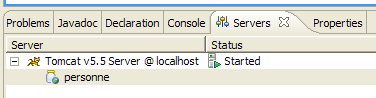
Puis demandons avec un navigateur l'URL [http://localhost:8080/personne/formulaire]. Nous demandons ici l'url [/formulaire] du contexte [/personne]. Le fichier [web.xml] de ce contexte indique que l'url [/formulaire] est traitée par la servlet de nom [formulairepersonne]. Dans le même fichier, il est indiqué que cette servlet est la classe [istia.st.servlets.ServletFormulaire]. C'est donc à cette classe que Tomcat va confier le traitement de la requête client. Si la classe n'était pas déjà chargée, elle le sera. Elle restera alors en mémoire pour les futures requêtes.
On obtient le résultat suivant avec le navigateur interne à Eclipse :

Nous obtenons les valeurs par défaut du nom et de l'âge, celles inscrites dans le fichier [web.xml]. Demandons maintenant l'URL [http://localhost:8080/personne/formulaire?txtNom=tintin&txtAge=30] :

Cette fois, nous obtenons les paramètres passés dans la requête. Le lecteur est invité à relire le code de la servlet [ServletFormulaire] s'il ne comprend pas ces deux résultats.
3.6.6. Rechargement automatique du contexte de l'application web
Lançons Tomcat :

puis modifions le code de la servlet de la façon suivante :
- la ligne 8 a été modifiée
Sauvegardons la nouvelle classe. Cette sauvegarde va entraîner, de la part d'Eclipse, une recompilation automatique de la classe [ServletFormulaire] que Tomcat va détecter. Il va alors recharger le contexte de l'application web [personne] pour prendre en compte les modifications. Ceci apparaît dans les logs de la vue [console] :

Demandons l'url [http://localhost:8080/personne/formulaire] sans relancer Tomcat :

La modification faite a bien été prise en compte.
Maintenant, modifions le fichier [web.xml] de la façon suivante :
<?xml version="1.0" encoding="UTF-8"?>
<web-app id="WebApp_ID" version="2.4"
xmlns="http://java.sun.com/xml/ns/j2ee"
xmlns:xsi="http://www.w3.org/2001/XMLSchema-instance"
xsi:schemaLocation="http://java.sun.com/xml/ns/j2ee http://java.sun.com/xml/ns/j2ee/web-app_2_4.xsd">
<display-name>personne</display-name>
<servlet>
<servlet-name>formulairepersonne</servlet-name>
...
<init-param>
<param-name>defaultNom</param-name>
<param-value>INCONNU</param-value>
</init-param>
...
</servlet>
...
</web-app>
- la ligne 12 a été modifiée
Ceci fait, sauvegardons le nouveau fichier [web.xml]. Dans la vue [console], aucun log ne signale le rechargement du contexte de l'application. Demandons l'url [http://localhost:8080/personne/formulaire] sans relancer Tomcat :
La modification faite n'a pas été prise en compte. Relançons Tomcat [clic droit sur serveur -> Restart -> Start] :

puis redemandons l'url [http://localhost:8080/personne/formulaire] :

Cette fois la modification faite dans [web.xml] est visible.
Une modification de [web.xml] ne provoque donc pas un rechargement automatique de l'application qui prendrait en compte le nouveau fichier de configuration. Pour forcer le rechargement de l'application web, on peut alors relancer Tomcat comme nous l'avons fait mais c'est une opération assez lente. Il est préférable de passer par l'outil [manager] d'administration des applications déployées dans Tomcat. Pour que cela soit possible, il faut qu'au sein d'Eclipse, Tomcat ait été configuré comme il a été montré au paragraphe 2.5.
Tout d'abord, avec le navigateur interne d'Eclipse, demandons l'url [http://localhost:8080] puis suivons le lien [Tomcat Manager], comme expliqué à la fin du paragraphe 2.5 :

Ouvrons un second navigateur [clic droit sur le navigateur -> New Editor] :
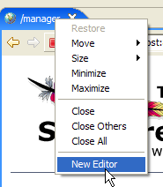 |  |
Dans ce second navigateur, demandons l'url [http://localhost:8080/formulaire] :
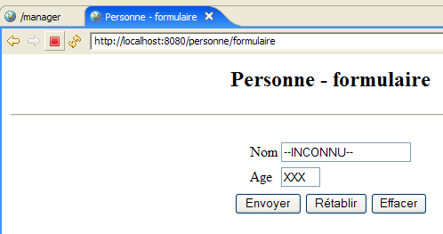
Modifions le fichier [web.xml] de la façon suivante puis sauvegardons-le :
<!-- ServletFormulaire -->
<servlet>
<servlet-name>formulairepersonne</servlet-name>
<servlet-class>
istia.st.servlets.personne.ServletFormulaire
</servlet-class>
<init-param>
<param-name>defaultNom</param-name>
<param-value>YYY</param-value>
</init-param>
<init-param>
<param-name>defaultAge</param-name>
<param-value>XXX</param-value>
</init-param>
</servlet>
Puis redemandons l'url [http://localhost:8080/formulaire]. Nous pouvons constater que la modification n'a pas été prise en compte. Maintenant, allons dans le premier navigateur et rechargeons l'application [personne] :

Puis redemandons l'url [http://localhost:8080/formulaire] avec le second navigateur :

La modification de [web.xml] a été prise en compte. Dans la pratique, il est utile d'avoir un navigateur ouvert sur l'application [manager] de Tomcat pour gérer ce genre de cas.
3.7. Coopération servlet et pages JSP
Lectures [ref1] : chapitre 2 : 2.3.7
Revenons aux deux architectures étudiées :

Aucune de ces deux architectures n'est satisfaisante. Elles présentent toutes les deux l'inconvénient de mélanger deux technologies : celles de la programmation Java qui s'occupe de la logique de l'application web et celle du codage HTML qui s'occupe de la présentation d'informations dans un navigateur.
- la solution [1] à base de page JSP a l'inconvénient de mélanger code HTML et code Java au sein d'une même page. Nous ne l'avons pas vu sur l'exemple traité qui était basique. Mais si [formulaire.jsp] avait du vérifier la validité des paramètres [txtNom, txtAge] de la requête du client, nous aurions été obligés de mettre du code Java dans la page. Cela devient très vite ingérable.
- la solution [2] à base de servlet présente le même problème. Bien qu'il n'y ait que du code Java dans la classe, celle-ci doit générer un document HTML. Là encore, à moins que le document HTML soit basique, sa génération devient compliquée et quasi impossible à maintenir.
Nous allons éviter le mélange des technologies Java et HTML en adoptant l'architecture suivante :

- l'utilisateur envoie sa requête à la servlet. Celle-ci la traite et construit les valeurs des paramètres dynamiques de la page JSP [formulaire.jsp] qui va servir à générer la réponse HTML au client. Ces valeurs forment ce qu'on appelle le modèle de la page JSP.
- une fois terminé son travail, la servlet va demander à la page JSP [formulaire.jsp] de générer la réponse HTML au client. Elle va lui fournir en même temps les éléments dont la page JSP a besoin pour générer cette réponse, ces éléments qui forment le modèle de la page.
Nous explorons maintenant cette nouvelle architecture.
3.7.1. La servlet [ServletFormulaire2]
Dans l'architecture ci-dessus, la servlet s'appellera [ServletFormulaire2]. Elle sera construite dans le même projet [personne] que précédemment, ainsi que toutes les servlets à venir :

[ServletFormulaire2] est tout d'abord obtenu par un copier / coller de [ServletFormulaire] au sein d'Eclipse :
- sélection [ServletFormulaire.java] -> clic droit -> Copy
- sélection [istia.st.servlets.personne] -> clic droit -> Paste -> changer le nom en [ServletFormulaire2.java]
Puis ensuite, nous en modifions le code de [ServletFormulaire2] de la façon suivante :
Seule la partie génération de la réponse HTTP a changé (lignes 44-46) :
- ligne 46 : la génération de la réponse est confiée à la page JSP formulaire2.jsp. Celle-ci pas encore étudiée, sera chargée d'afficher les paramètres récupérés dans la requête du client, un nom (lignes 35-38) et un âge (lignes 39-42).
- ces deux valeurs sont placées dans les attributs de la requête [request], associées à des clés. Les attributs d'une requête sont gérés comme un dictionnaire.
- ligne 44 : le nom est mis dans la requête associé à la clé "nom"
- ligne 45 : l'âge est mis dans la requête associé à la clé "age"
- ligne 46 : demande l'affichage de la page JSP [formulaire2.jsp]. On passe en paramètre à celle-ci :
- la requête [request] du client, ce qui va permettre à la page JSP d'avoir accès aux attributs de celle-ci qui viennent d'être initialisés par la servlet
- la réponse [response] qui va permettre à la page JSP de générer la réponse HTTP au client
Une fois la classe [ServletFormulaire2] écrite, son code compilé apparaît dans [build/classes] :

3.7.2. La page JSP [formulaire2.jsp]
La page JSP formulaire2.jsp est obtenue par copier / coller de la page [formulaire.jsp]

puis transformée de la façon suivante :
<%@ page language="java" contentType="text/html; charset=ISO-8859-1"
pageEncoding="ISO-8859-1"%>
<!DOCTYPE HTML PUBLIC "-//W3C//DTD HTML 4.01 Transitional//EN">
<%
// on récupère les valeurs nécessaire à l'affichage
String nom=(String)request.getAttribute("nom");
String age=(String)request.getAttribute("age");
%>
<html>
<head>
<meta http-equiv="Content-Type" content="text/html; charset=ISO-8859-1">
<title>Personne - formulaire2</title>
</head>
<body>
<center>
<h2>Personne - formulaire2</h2>
<hr>
<form action="" method="post">
<table>
<tr>
<td>Nom</td>
<td><input name="txtNom" value="<%= nom %>" type="text" size="20"></td>
</tr>
<tr>
<td>Age</td>
<td><input name="txtAge" value="<%= age %>" type="text" size="3"></td>
</tr>
</table>
<table>
<tr>
<td><input type="submit" value="Envoyer"></td>
<td><input type="reset" value="Rétablir"></td>
<td><input type="button" value="Effacer"></td>
</tr>
</table>
</form>
</center>
</body>
</html>
Seules les lignes 4-8 ont changé vis à vis de [formulaire.jsp] :
- ligne 6 : récupère la valeur de l'attribut nommé "nom" dans la requête [request], attribut créé par la servlet [ServletFormulaire2].
- ligne 7 : fait de même pour l'attribut "age"
3.7.3. Configuration de l'application
Le fichier de configuration [web.xml] est modifié de la façon suivante :
<?xml version="1.0" encoding="UTF-8"?>
<web-app id="WebApp_ID" version="2.4"
xmlns="http://java.sun.com/xml/ns/j2ee"
xmlns:xsi="http://www.w3.org/2001/XMLSchema-instance"
xsi:schemaLocation="http://java.sun.com/xml/ns/j2ee http://java.sun.com/xml/ns/j2ee/web-app_2_4.xsd">
<display-name>personne</display-name>
<!-- ServletFormulaire -->
<servlet>
<servlet-name>formulairepersonne</servlet-name>
<servlet-class>
istia.st.servlets.personne.ServletFormulaire
</servlet-class>
<init-param>
<param-name>defaultNom</param-name>
<param-value>inconnu</param-value>
</init-param>
<init-param>
<param-name>defaultAge</param-name>
<param-value>XXXX</param-value>
</init-param>
</servlet>
<!-- ServletFormulaire 2-->
<servlet>
<servlet-name>formulairepersonne2</servlet-name>
<servlet-class>
istia.st.servlets.personne.ServletFormulaire2
</servlet-class>
<init-param>
<param-name>defaultNom</param-name>
<param-value>inconnu</param-value>
</init-param>
<init-param>
<param-name>defaultAge</param-name>
<param-value>XXX</param-value>
</init-param>
</servlet>
<!-- Mapping ServletFormulaire -->
<servlet-mapping>
<servlet-name>formulairepersonne</servlet-name>
<url-pattern>/formulaire</url-pattern>
</servlet-mapping>
<!-- Mapping ServletFormulaire 2-->
<servlet-mapping>
<servlet-name>formulairepersonne2</servlet-name>
<url-pattern>/formulaire2</url-pattern>
</servlet-mapping>
<!-- fichiers d'accueil -->
<welcome-file-list>
<welcome-file>index.html</welcome-file>
</welcome-file-list>
</web-app>
Nous avons conservé l'existant et ajouté :
- lignes 22-36 : une section <servlet> pour définir la nouvelle servlet ServletFormulaire2
- lignes 42-46 : une section <servlet-mapping> pour lui associer l'URL /formulaire2
Lancez ou relancez le serveur Tomcat si besoin est. Nous demandons l'URL
http://localhost:8080/personne/formulaire2?txtNom=milou&txtAge=10 :
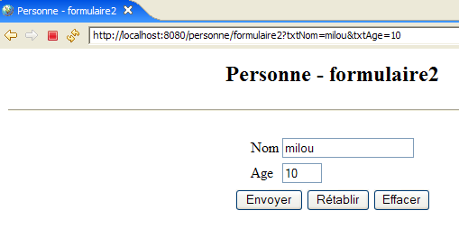
Nous obtenons le même résultat que précédemment mais la structure de notre application est désormais plus claire : une servlet qui contient de la logique applicative et délègue à une page JSP l'envoi de la réponse au client. Nous procèderons désormais toujours de cette façon.